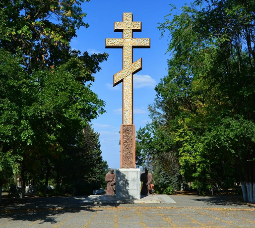
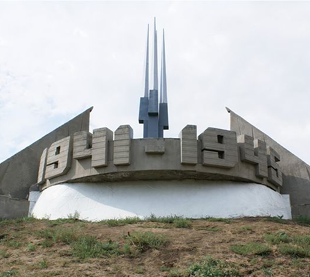
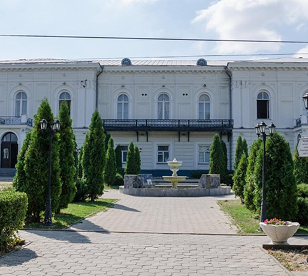

Чего мы там не видели?
Новочеркасск — это город казачьей славы, величественной архитектуры и богатых традиций донского края. Здесь переплетаются дух истории, торжественный облик соборов и уют зеленых бульваров. Город поражает своим размахом, сохраняя атмосферу старинной столицы казачества, где каждый уголок дышит легендами о смелости и свободе.
-
Поклонный крест
Поклонный крест в Новочеркасске — это величественный памятник, установленный на въезде в город как символ веры, памяти и казачьих традиций. Он встречает гостей и напоминает о духовных корнях казачества. Крест возвышается на холме, откуда открывается живописный вид на окрестности, создавая атмосферу тишины и благоговения.
-
Курган Славы
Это мемориальный комплекс, посвящённый подвигу советских воинов, освободивших город от немецко-фашистских захватчиков в 1943 году. На вершине кургана возвышается величественная стела, увенчанная звездой, а у подножия горят Вечный огонь и расположены плиты с именами героев. С вершины открывается панорамный вид на город, напоминая о цене, которую народ заплатил за мирное небо. Это место памяти, уважения и гордости за подвиг предков.
-
Атаманский дворец
Это историческая резиденция донских атаманов, построенная в XIX веке. Его величественное здание в классическом стиле служило административным и жилым помещением для казачьих правителей. Сегодня в стенах дворца находится музей, где представлены экспозиции, рассказывающие о жизни и быте донского казачества, а также о роли атаманов в истории региона. Просторные залы, старинные интерьеры и уникальные артефакты создают атмосферу былого величия казачьей столицы.